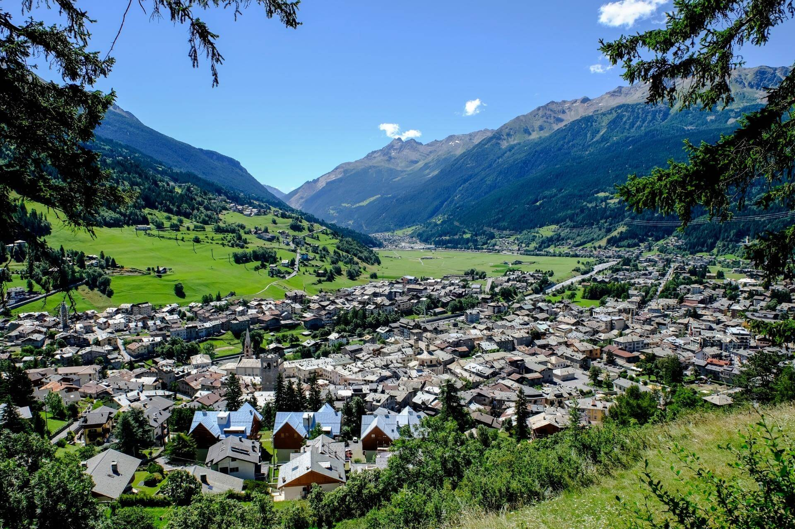

The centre of this region is the wide and sunny plain of Bormio, for centuries gouged by glaciers and flowing waters; it is surrounded by mountains that to the north form a barrier of limestone and dolomite of which the principal peak is the Reit (3075 m. asl.). Three valleys meet here: Valdidentro, Valdisotto and Valfurva. The region enjoys a particularly fine climate, despite its altitude and latitude. There is exceptionally clear and dry air and a lot of sun. Overcast days are rare. During the last years the maximum temperature was +28° and the minimum -14°. Snowfalls are abundant; the northerly position of some of the ski slopes ensures the presence of snow until well into the spring.
The Bormio Region is within the borders of the Stelvio National Park, one of the biggest protected areas of Europe. The most salient characteristic of the vegetation is the presence of woods which are of great interest both for their quantity and for their flora. Most of the valleys here are covered in spruce trees. The valleys also abound in stone pines, larches and birches and they are exceptionally rich in flora with 1800 species present. Of exceptional interest is the presence of thermal waters which ensure, at an altitude of about 1450 metres, the habitat of a type of fern normally found only at an altitude of 700/800 metres. A notable peculiarity of the vegetation of the region of Bormio is the outcrop of sedimentary rocks (limestone and dolomite), which ensure the growth of woods of mountain pines (pinus mugo) and heather where there is less snow and of rhododendron hirsutus (alpenrose) where the snowfall is more prolonged.

This region provides an ideal habitat for the typical fauna of the Alps such as deer, chamoix and some steinbocks. Minor fauna is present in the form of numerous colonies of marmots, squirrels, badgers, ermines, foxes and hares. There are some 200 species of birds including the grouse and the white partridge; there are also some golden eagles and bearded vultures (gypaetus barbatus). Surprising the presence of permanent dwellings at a height that elsewhere marks the beginning of snowy wastes. Still visible are the typical “baite” built with wood that are the last examples of a rural architecture which represents an authentic cultural form.